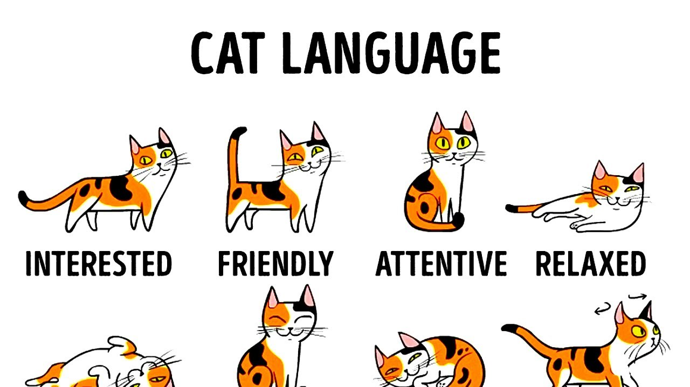

What is normal cat behaviour?

The cat has a subtle repertoire of facial expressions, vocal sounds, and tail and body postures that express
its emotional state and intentions. These various signals serve to increase, decrease, or maintain social
distance. One distinctive social behaviour involves rubbing the side of the head, lips, chin, or tail
against the owner and against furniture. These regions of the cat’s body contain scent glands that seem to
play a role in establishing a familiar odour in the cat’s environment.

Cats also meow to communicate with us. A short single meow is usually used as a casual greeting, whilst lots of
meowing or trilling indicate your pet is happy to see you! Longer, mid-pitch meows can be requests for attention
or food, while high-pitched meows indicate shock or pain. Low meows are a sign that your cat may be ready to
fight, especially when combined with growling, so it’s a good idea to leave them be until they are more relaxed.
Growling, hissing and spitting are the common sounds of any pet that is upset, anxious, or feeling threatened,
so be sure to give them some space if they sound aggressive towards you. It’s important to be aware that whilst
purring usually has positive connotations, it can sometimes be a sign of pain – so pay close attention to your
cat’s vocalisations just in case. If you like to talk to your cat, then there’s a chance they might understand
you! Cats can understand their owner’s voices and may even recognise several different words, aside from their
name. They also respond to different tones and volumes, so try to use a calm, gentle voice when speaking to
them. It’s important to use consistent tone of voice, facial expressions and gestures to avoid confusing your
cat.
Tips for understanding your cat
There are several social cues which will help you further understand cat body language and behaviour. These are
some of our top suggestions:
- If your cat gently bites you whilst playing, they are probably telling you they have had enough
- If your cat growls at you when you stroke them or pick them up, they do not want to be disturbed –
especially if they are sleeping or eating
- If your cat runs off when you greet them, you likely moved too quickly. When greeting your cat, take things
slowly and let them approach you
- If your cat doesn’t show you the typical signs of affection mentioned here, don’t worry. All cats are
different and show their feelings in different ways
Fun Fact

Cats are known to have traveled hundreds of miles to find their owners in new homes to which they themselves
have never been. Dogs have also performed such feats of so-called psi (psychic) trailing. Scientists have
not been able to find a physiological or psychological explanation for this ability.
Home